desktop_windowsСистемные настройки
Языки
To translate with Crowdin, you have to login Crowdin and restart TheDesk when login is finished.Импорт и экспорт предпочтений
If you got a error when you choose the file, please paste the strings printed when you open the file and click import
Шрифт
Select your favorite font to 'Select'(Windows/ macOS only)Папка для сохранения
TheDesk использует это значение, когда он пытается сохранить фотографии или сделать скриншоты.
color_lensТемы
Выбрать тему
Редактировать и добавить пользовательские темы
Имя
Об этой теме
Цветная схема
Background
Background colorText
Цвет текстаSubcolor
Подцвет, имеет гармонию с вторичным цветомAccent
Background of boostsИмпорт пользовательских тем
reorderНастройки хронологии
{{item.text.head}}
{{textbox.text.after}} {{item.text.after}}
Пользовательский звук
Volume
0-100(default:80)80
sendНастройки публикации
{{item.text.head}}
{{check.kirishimaText}} {{textbox.text.after}} {{item.text.after}}
Easy inserter
You can insert any letters and emojis with only 3 keysCtrl+Shift+1:
Ctrl+Shift+2:
Ctrl+Shift+3:
Plugins
bookmarkMute & Emphasis Preferences
Client Mute
Client Emphasis
Click client name on toots to toggle mute and emphasis.Words Mute
Enter to setWords Emphasis
Enter to setUsers Emphasis
Set on users data modals. Use this color to emphasis
Spotify and NowPlaying Preferences
Account Connection(Spotify)
TheDesk save your data on thedesk.top server.Connect Disconnect
Account Connection(Last.fm)
User name...(empty to disconnect) You cannot hide your recent play log at last.fm privacy settings.Edit a template
Spotify:{song}:Song name/{album}:Album name/{artist}:Artist name/{url}:URL to Spotify
>macOS:{song}:Song name/{album}:Album name/{artist}:Artist name/composer:{composer}/spampling rate:{hz}/bit rate:{bitRate}/genre:{genre}
Attach an Artwork of Spotify
If the song has no artwork, automatic complete it(macOS)
If you nowplaying an non-artwork song, get one which seems nice through API. If you do not like the completed artwork, you can right-click it to delete.
hearingTTS(text to speech) Preferences
BouyomiChan connect
Require: BouyomiChan WebSocket PluginGitHubSpeed
1-100(default:10)10
Pitch
0-100(default:50)50
Volume
0-100(default:100)100
Test
undoНазад
Keyboard shortcuts
以下Markdownに対応したインスタンスのみ。
- Ctrl+B/I/S/U:太字/斜字/取り消し/下線
When a toot is selected:
- F:Favourite this toot
- B:Boost this toot
- R:Reply to this toot
webWebsite trending_upSupport(Pixiv FANBOX) trending_upSupport(Patreon) trending_upSupport(Liberapay) listHelp/Docs GitHub Main author: Cutls@cutls.com
TheDesk @ 89b25c56e7ecf0c1c0e3b73f3138207abe1a6c9c - Check update
Kyash
OSS License

Copyright © TheDesk 2018 Under GNU General Public License v3.0 and Privacy Policy
TheDeskおよびCutls Pは被災地支援のためのマストドン研究会をログイン機能提供等の形で応援しています。
タグタイムラインを開く:#被災地支援のためのマストドン研究会